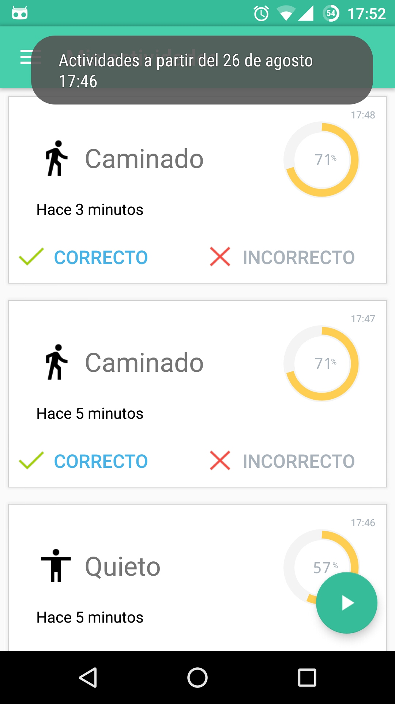
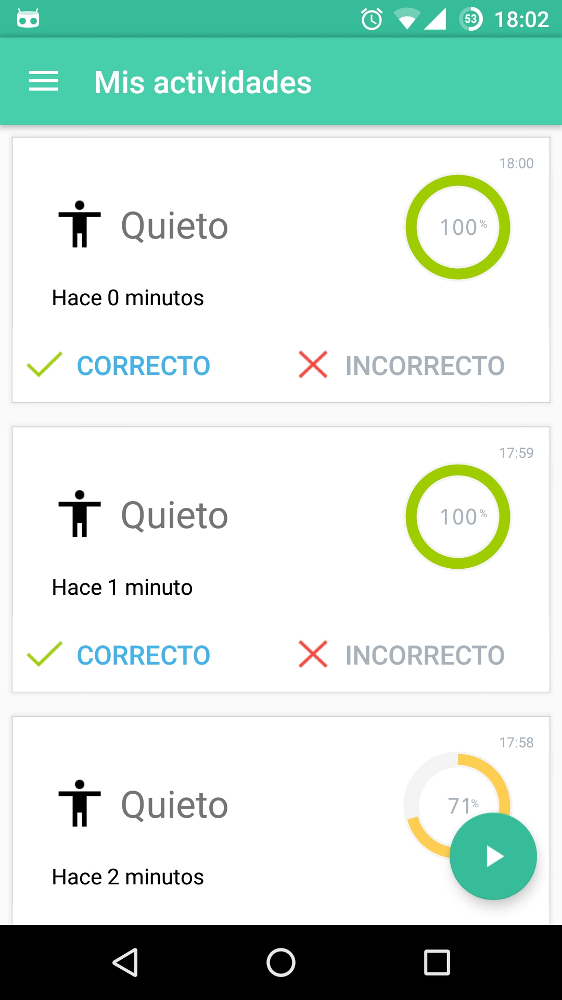
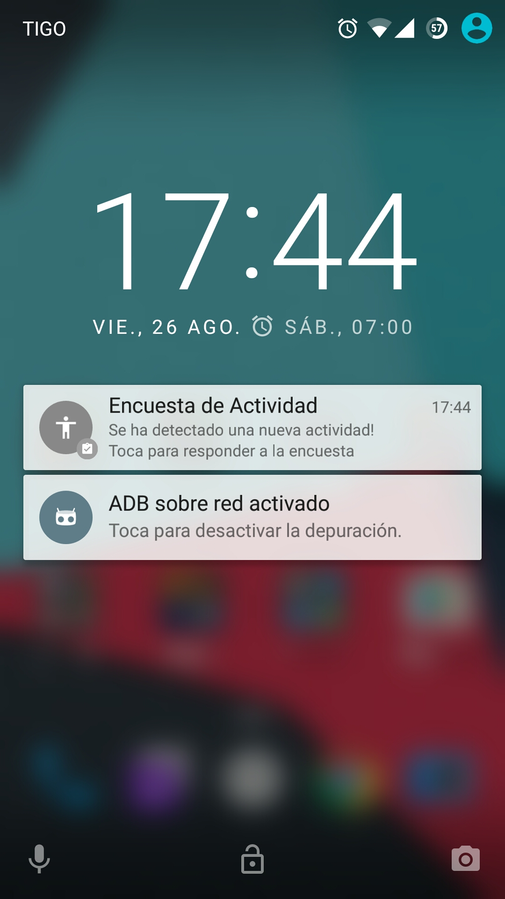
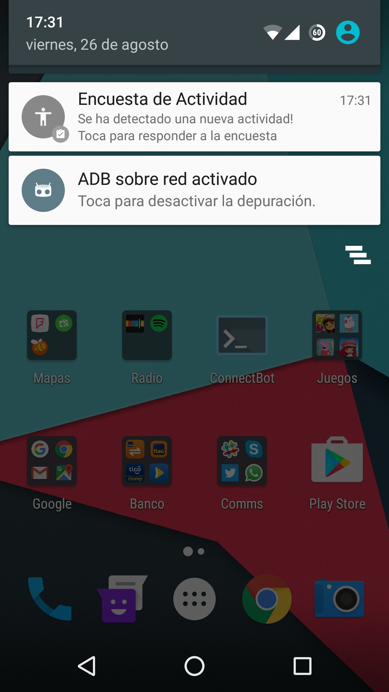
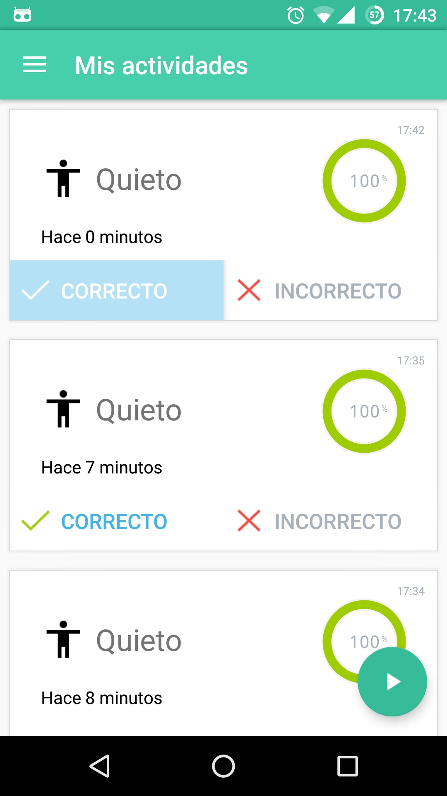
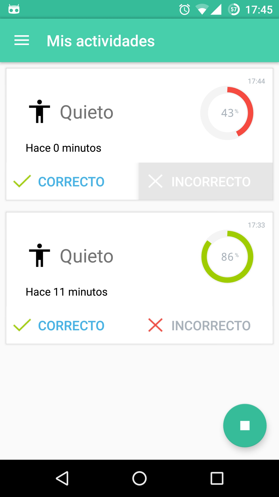
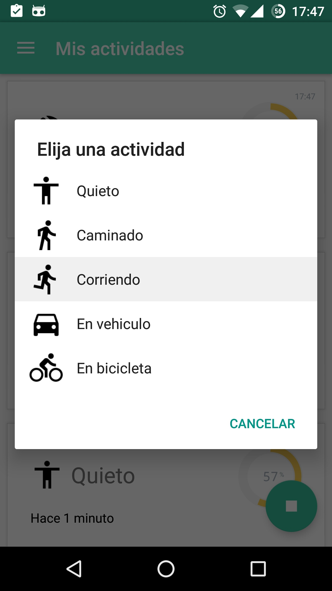
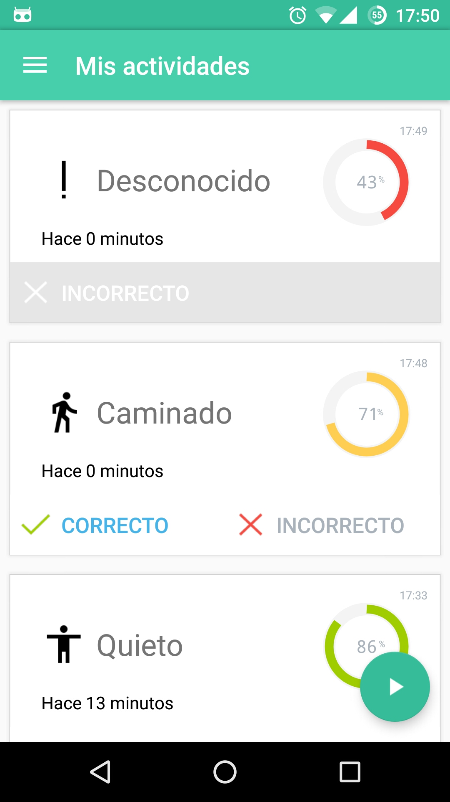

Contribuir con Activity Survey¶
Ver tus actividades¶
Dependiendo del intervalo de reconocimiento la aplicación desplegará las últimas 5 actividades recientes reconocidas.
| Actividades recientes | Mas actividades |
|---|---|
|  |  |
Además recibiras notificaciones periodicas a medida que se reconozca una actividad.
| Notificación Recibida | Detalle de actividad |
|---|---|
|  |  |
Actividades Conocidas¶
Las actividades que el servicio reconoce son:
- Quieto
El servicio detectó que el teléfono móvil está quieto.
- Caminando
El servicio detectó que el teléfono móvil está en movimiento lento.
- Correr
El servicio detectó que el teléfono móvil está en movimiento apresurado.
- En vehiculo
El servicio detectó que el teléfono móvil está en movimiento dentro de un vehiculo.
- En bicicleta
El servicio detectó que el teléfono móvil está en movimiento sobre una bicicleta.
- Tilting
El servicio detectó que el teléfono móvil está girando.
- Desconocido
El servicio no pudo detectar la actividad.

{kind=link}
{kind=link}
{kind=link}
{kind=link}
{kind=link}
{kind=link}
{kind=link}
{kind=link}
{kind=link}
{kind=link}
Responder a la Encuesta¶
Para responder a la encuesta tienes las siguientes opciones.
- Actividad Correcta
- El servicio detecto correctamente la actividad física, marcarla como correcta (1)
- Actividad Incorrecta
- El servicio detectó incorrectamente la actividad física, marcala como incorrecta (2) y proveer una retroalimentación con la actividad adecuada (3).
| Marcar correcto (1) | Marcar incorrecto (2) | Responder (3) |
|---|---|---|
|  |  |  |
{kind=link}
{kind=link}
{kind=link}
Adicionalmente puede ocurrir que no se detecte ninguna actividad.
- Actividad No reconocida
- El servicio no pudo detectar la activdad física, marcala como incorrecta y proveer la retroalimentación con la actividad adecuada
| Marcar incorrecto (1) | Responder (3) |
|---|---|
|  |
{kind=link}
{kind=link}